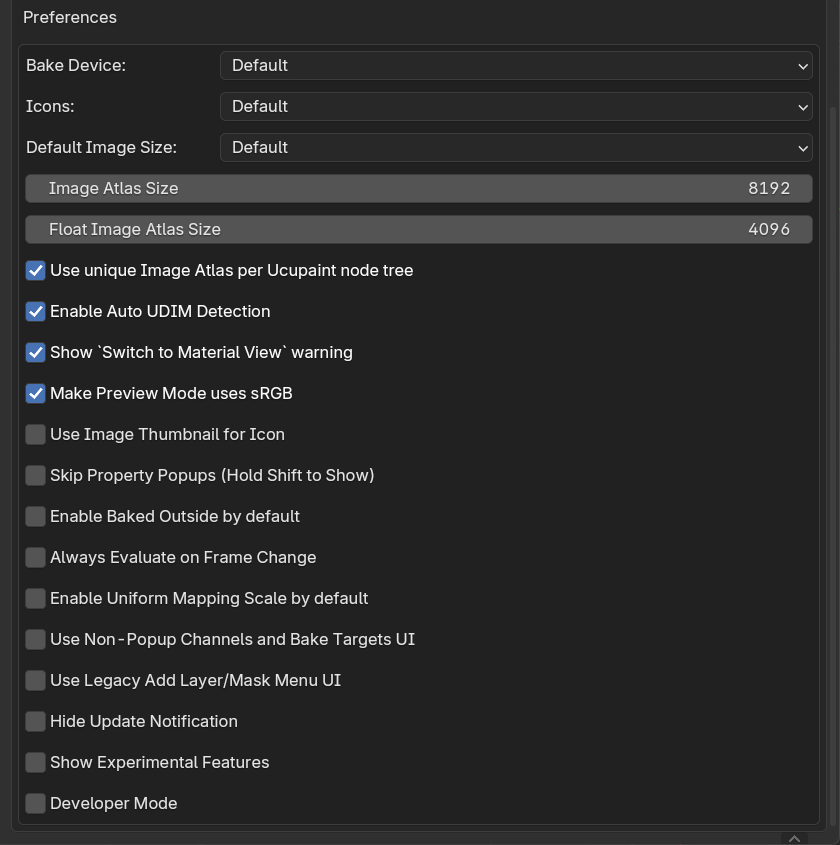

Preferences¶
Ucupaint preferences can be accessed in Blender Preferences > Add-ons > Ucupaint
 |
|---|
| Ucupaint Preferences |
Explanations for each preference option:
- Bake Device: Default device for baking. The option
Defaultmeans the last bake device used will be the default for the next bake. - Icons: Ucupaint icon set, you can choose between
Dark,LightorLegacy. TheDefaultoption will change between dark and light icons depending on your active theme. - Default Image Size: Default image size when creating a new image. The option
Defaultmeans the last image size used will be the default for the next time. - Image Atlas Size: Size of the image atlas that will be created.
- Float Image Atlas Size: Size of the float image atlas that will be created.
- Use unique Image Atlas per Ucupaint node tree: Use a unique image atlas per Ucupaint node tree rather than every node using the same image atlas.
- Enable Auto UDIM Detection: Automatically enable
Use UDIMbased on the selected UV Map when creating/baking an image. - Show
Switch to Material Viewwarning: Show warning when the view is not in material/rendered view. - **Make Preview Mode use sRGB **: Automatically set display viewspace to sRGB when using Preview Mode
- Use Image Thumbnail for Icon: Use the image thumbnail for the image icon in the layers list.
- Skip Property Popups (Hold Shift to Show): Skip the dialog box when creating a new image/mask. When enabled, you can bring the dialog box back by holding left shift.
- Enable Baked Outside by default: Automatically bring bake target image results to outside of Ucupaint node so the exporter can read them.
- Always Evaluate on Frame Change: Evaluate all Ucupaint properties on frame change, can be very slow, but needed if you want to keyframe layer/mask visibility toggle. Tip: If you want to animate layer/mask visibility, you can just keyframe the layer/mask opacity, those don't need this preference option to be enabled.
- Enable Uniform Mapping Scale by default: Enable uniform mapping scale by default in Layer and Mask UVs. This will make all scale axes have the same value.
- Use Non-Popup Channels and Bake Targets UI: Enabling this will make the channels and bake targets panel accessible below the layers panel. This is the default behavior for Blender 2.7x.
- Use Legacy Add Layer/Mask Menu UI: Enabling this will make the add layer/mask menu show all the options at the same time rather than having submenus. This is the default behavior for Blender 3.6 and lower.
- Hide Update Notification: Hide update notification even when there's a new version available.
- Show Experimental Features: Show Experimental features of Ucupaint, most of the features here are incomplete or don't work.
- Developer Mode: Do not enable this unless you're a developer and know what you're doing.